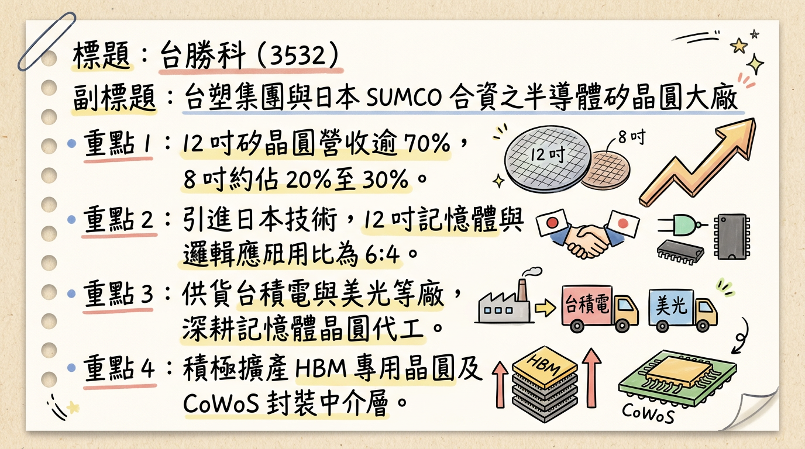
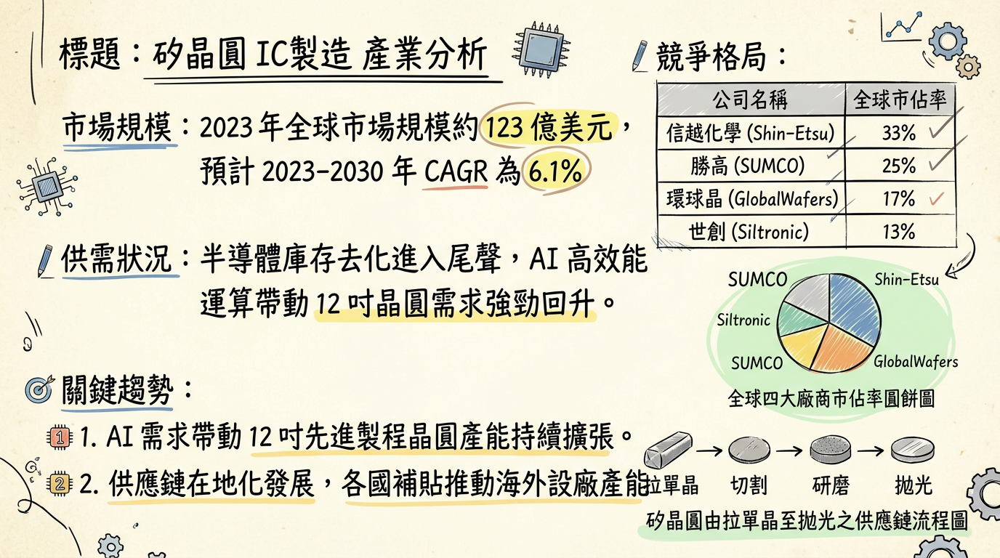
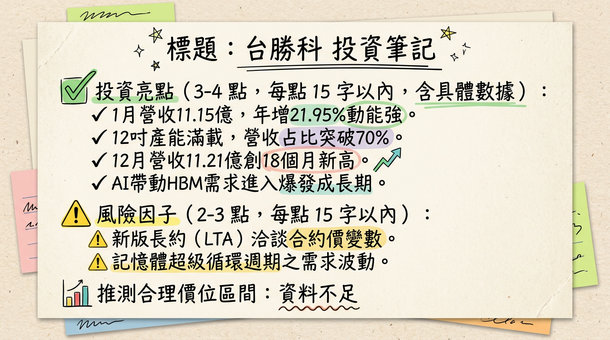

3532 台勝科 深度研究報告
一句話摘要
台勝科（3532）正處於由 8 吋成熟製程轉向 12 吋 AI 高階應用的關鍵轉型期，隨麥寮新廠於 2026 年全面產能爬坡，搭配 HBM4 認證與記憶體超級循環，預期 2026 年 EPS 將迎來爆發性增長（YoY +66%）。
公司概覽
台勝科（Formosa Sumco Technology）為台塑集團與全球第二大矽晶圓廠日本 SUMCO 之合資公司。核心業務為半導體級矽晶圓之研發、製造與銷售，技術高度依賴日本 SUMCO 移轉。
營收結構（資料日期：2025/11/28 法說會）
| 產品線 | 營收佔比 | 主要應用 | 市場動態 |
|---|
| 12 吋矽晶圓 | 70% - 80% | 記憶體(DDR5/HBM)、先進邏輯製程(5nm/3nm) | 稼動率 100% 滿載，需求強勁 |
| 8 吋矽晶圓 | 20% - 30% | 車用、PMIC、成熟製程 | 面臨中國同業價格競爭，復甦緩慢 |
核心競爭優勢
母公司技術背書：日商 SUMCO 提供最先進的拋光片（Polished Wafer）與磊晶片（Epitaxial Wafer）技術。
集團綜效：身為台塑集團成員，具備強大的資金調度能力與基礎建設支援（如麥寮廠區）。
HBM/先進封裝領先佈局：已切入 CoWoS 中介層（Interposer）及承載晶圓（Carrier Wafer），並正研發 HBM4 專用高平坦度晶圓。
長約 (LTA) 保護：麥寮新廠多數產能已提前與一線大廠（美光、台積電等）簽訂長約，獲利能見度高。
財務分析
月營收趨勢表格（2025/08 - 2026/01）
| 月份 | 營收（億元） | 月增率 (MoM) | 年增率 (YoY) | 備註 |
|---|
| 2026/01 | 11.15 | -0.47% | +21.95% | 景氣強勁回升 |
| 2025/12 | 11.21 | +3.52% | +3.82% | 創 18 個月新高 |
| 2025/11 | 10.82 | +1.57% | +1.77% | 逐季走揚 |
| 2025/10 | 10.66 | +1.85% | +9.40% | --- |
| 2025/09 | 10.46 | +1.56% | +2.44% | --- |
| 2025/08 | 10.30 | +1.81% | +2.23% | --- |
年度獲利趨勢
- 2024 年（實際）：EPS 3.35 元（營收 124.22 億元）。
- 2025 年（法人預估）：EPS 1.37 ~ 1.81 元（前三季 0.8 元，Q4 回升）。
- 2026 年（法人展望）：EPS 預估達 5.90 元，年成長率挑戰 66%。
法說會重點（2025/11/28 紀錄）
- 產能現況：12 吋矽晶圓產能利用率 100% 滿載，記憶體市場進入「超級循環」。
- 價格策略：長約（LTA）價格穩定，現貨價格隨 AI 需求有調漲機會，合約彈性增加（改為半年/一年一約）。
- 新廠進度：麥寮 12 吋新廠於 2025 年底投產，2026 年進入產能全面貢獻期。
- 地緣政治：中國市場營收佔比已降至 10%，有效降低美中貿易戰風險。
券商觀點（2025/12 - 2026/03）
| 券商名稱 | 報告日期 | 目標價 | 評等 | 2026 EPS 預估 |
|---|
| 華南永昌 | 2025/12/01 | 105 元 | 看多 | 4.38 元 |
| Investing.com | 2026/02/24 | 106.8 元 | 持有/觀望 | -- |
| 永豐金證券 | 2026/01/23 | -- | 正向展望 | -- |
| CMoney | 2025/09/16 | 91 元 | ⚠️過時 | -- |
財報深度分析
利潤率趨勢表格（近 8 季）
| 季度 | 毛利率 (%) | 營業利益率 (%) | 稅後淨利率 (%) | EPS (元) |
|---|
| 2025 Q3 | 15.86 | 7.69 | 3.43 | 0.56 |
| 2025 Q2 | 16.09 | 7.65 | 1.53 | -0.38 |
| 2025 Q1 | 17.77 | 8.95 | 7.99 | 0.61 |
| 2024 Q4 | 21.43 | 12.93 | 10.46 | -- |
| 2024 Q3 | 21.43 | 13.09 | 9.74 | -- |
| 2024 Q2 | 21.04 | 13.24 | 11.71 | -- |
| 2024 Q1 | 20.36 | 12.68 | 12.73 | -- |
| 2023 Q4 | 33.79 | 27.41 | 23.25 | -- |
- 存貨分析：2025 Q3 存貨週轉天數 136.19 天，處於高檔但尚無滯銷風險，主因新廠投產認證中。
- 資本支出：麥寮新廠投資總額 282.6 億元，導致 2025 Q3 負債比升至 52.31%，應付公司債餘額達 227.1 億元。
股權異動
- 母公司調節：日商 SUMCO 於 2025 年頻繁申報轉讓持股（5月 2,000張、8月 2,500張、12月 2,500張），對短期股價造成壓制。
- 申報轉讓：均採取「鉅額逐筆交易」，雖然持股比例略降，但仍維持控股地位，技術合作關係未變。
產業分析
全球矽晶圓競爭格局比較
| 公司名稱 | 市佔率(約略) | 優勢 | 挑戰 |
|---|
| 信越半導體 | ~30% | 全球首位，先進製程絕對優勢 | 價格門檻高 |
| SUMCO (母公司) | ~24% | 記憶體晶圓技術領先 | 高折舊費用 |
| 環球晶 (6488) | ~17% | 多元化產品線，併購擴張 | 跨國管理複雜度 |
| 台勝科 (3532) | ~4% (台灣區) | 台塑集團資源、HBM 高純度比重 | 8 吋受中國削價競爭影響 |
| 中國同業 | 快速增長 | 政府補貼、8 吋市場價格戰 | 12 吋良率仍待提升 |
近期催化劑（Catalysts）
1.
HBM4 認證：預計 2026 Q2 通過主要客戶認證，成為營收增長新火種。
2. 麥寮新廠產能開出：2026 年 Q1 起產能逐月拉升，單位成本將隨規模經濟下降。
3. DDR5 轉換潮：伺服器市場更換 DDR5 帶動高品質 12 吋拋光片需求。
1.
折舊壓力：2026 年為新廠大規模折舊首年，若稼動率未如預期將衝擊淨利率。
2. 匯率風險：新台幣若大幅走升將導致業外匯損。
⭐ 成長動能時間軸
- 2024 - 2025 Q2：【底部築底期】 大規模資本支出（282.6 億），EPS 受折舊與市況壓抑。
- 2025 Q4：【營運轉折點】 麥寮新廠開始小量產，12 吋營收佔比突破 75%。
- 2026 Q1：【產能攀升期】 1 月營收年增 22%，反映記憶體客戶積極拉貨。
- 2026 Q2：【高階認證期】 預計 HBM4 專用晶圓完成認證，切入 AI 核心供應鏈。
- 2026 Q4：【獲利爆發期】 新廠達到全產能運作，預期單季 EPS 挑戰歷史高位。
2026 展望
- 成長動能：AI 伺服器對 HBM 及 DDR5 的剛性需求將確保 12 吋產能維持 100% 稼動率。新廠加入後，營收規模可望較 2025 年成長 25% 以上。
- 風險因子：8 吋產品面臨中國大陸（滬矽、立昂微）低價搶單，毛利率改善空間受限；另需追蹤 SUMCO 是否持續減持。
投資結論
景氣循環向上：2025 年為獲利谷底，2026 年進入「價量齊揚」的超級循環週期。
產品結構優化：避開競爭激烈的 8 吋，全力衝刺 12 吋 AI 應用。
財務壓力可控：雖然負債比升高，但背靠台塑集團，資金風險低，新廠 LTA 已鎖定多數利潤。
建議評價：歷史本益比（P/E）區間約 15-25 倍，以 2026 預估 EPS 5.90 元計算，目標價區間建議在 105 - 135 元。若股價回檔至 100 元以下為具備吸引力之佈局點。
本報告由 AI 自動產生，資料來源為公開網路資訊，僅供參考，不構成投資建議。產生時間：2026-03-01 02:12
📊 資訊卡


